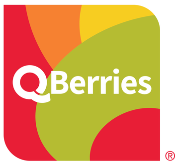

Fenología
Qué es y para qué sirve
Captura muestras en campo, súbelas y proyecta producción con data clara, ordenada y lista para decidir.

Q BERRIES
Fenología está hecha para campo. En computadora no se puede usar.
Abre el mismo enlace desde tu teléfono o tablet e instálala en la pantalla de inicio.
Guardando…
Detalle KG
Historial local · 18 h
La foto llevará fecha y hora
Q Berries
Recomendaciones
La cartilla queda en cola y se sincroniza al volver la conexión.
Consulta el estado de cada envío desde Historial.
Completa, guarda y continúa con el siguiente lote.
Enviando pendientes… Deja la app abierta.
0 / 0
No cierres ni bloquees el teléfono hasta terminar.
Q BERRIES
Completa los datos para abrir la cartilla
Cartilla de campo
Fenología
Captura muestras en campo, súbelas y proyecta producción con data clara, ordenada y lista para decidir.
Elige módulo, turno y lote. En segundos estás listo para capturar.
Anota ramas, yemas, flor, cuaja y estados E1–E4 en cada punto de campo.
Suma una observación de campo y guarda. Si no hay red, queda pendiente.
Al sincronizar, la data queda lista para proyectar con claridad.
Ver más
Borrador
Último envío
Fenología
Envíos y pendientes
Sin registros todavía.
—
—
Muestras